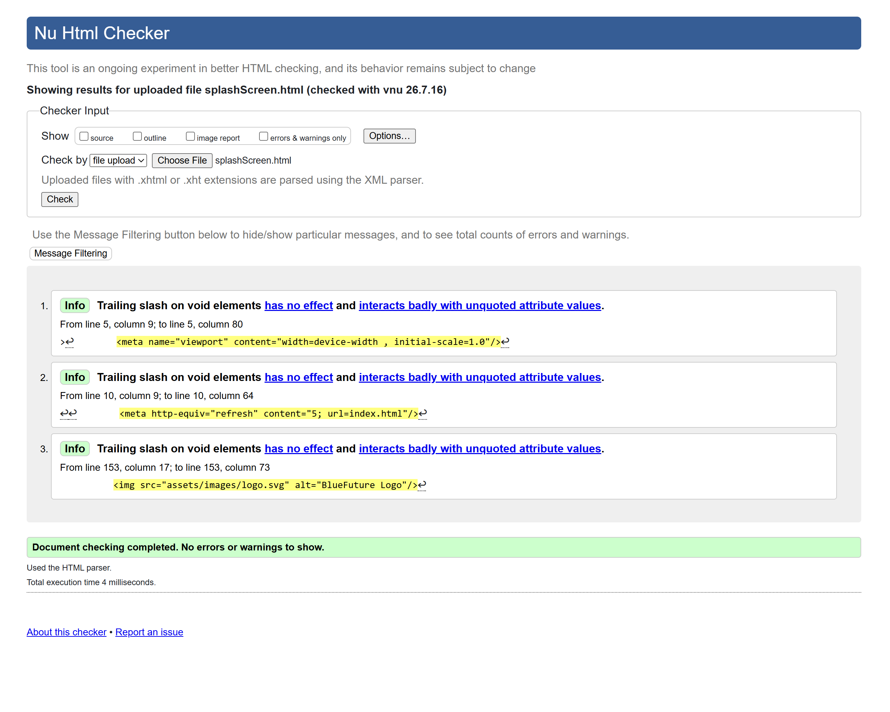
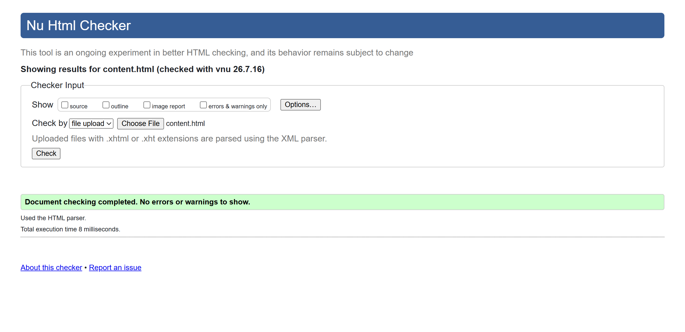

Splash Screen
Validation Result
The Splash Screen was validated using the W3C HTML Validator. The page passed with no errors.

Link to page
Back to Page Editor
Action Impact Simulator
Validation Result
The Action Impact Simulator was validated using the W3C HTML Validator. The page passed with no errors.

Link to page
Open the Action Impact Simulator
Back to Page Editor
Content Page
Validation Result
The Content Page was validated using the W3C HTML Validator. The page passed with no errors.

Link to page
Back to Page Editor
Reflection on Validation
Using the W3C Validator was a massive reality check because it caught things I completely missed just by looking at the page layout. It pointed out duplicate IDs and skipped heading levels stuff that technically worked on my screen but was breaking proper web standards under the hood. Fixing those errors forced me to actually clean up my HTML structure, which makes the whole site way more stable and accessible for things like screen readers. It really showed me that just because a page looks good visually doesn't mean it's coded right, and passing the official validation is what makes the difference between messy code and a professional, functional project.